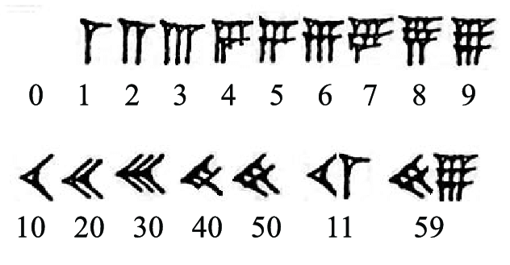
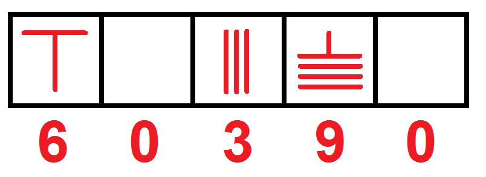
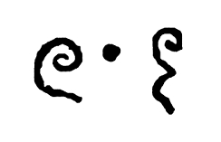

By the middle of the 2nd millennium BC, the Babylonian mathematics had a sophisticated base 60 positional numeral system. The lack of a positional value (or zero) was indicated by a space between sexagesimal numerals. In a tablet unearthed at Kish (dating to as early as 700 BC), the scribe Bêl-bân-aplu used three hooks as a placeholder in the same Babylonian system. By 300 BC, a punctuation symbol (two slanted wedges) was co-opted to serve as this placeholder.
The Babylonian placeholder was not a true zero because it was not used alone, nor was it used at the end of a number. Thus numbers like 2 and 120 (2×60), 3 and 180 (3×60), 4 and 240 (4×60) looked the same, because the larger numbers lacked a final sexagesimal placeholder. Only context could differentiate them.
It is generally believed that the use of zero in the Americas predated the Maya and was possibly the invention of the Olmecs. Many of the earliest Long Count dates were found within the Olmec heartland, although the Olmec civilization ended by the 4th century BC, several centuries before the earliest known Long Count dates.
Although zero became an integral part of Maya numerals, with a different, empty tortoise-like "shell shape" used for many depictions of the "zero" numeral, it is assumed not to have influenced Old World numeral systems.
The Sūnzĭ Suànjīng, of unknown date but estimated to be dated from the 1st to 5th centuries AD, and Japanese records dated from the 18th century, describe how the c. 4th century BC Chinese counting rods system enabled one to perform decimal calculations. As noted in Xiahou Yang's Suanjing (425–468 AD) that states that to multiply or divide a number by 10, 100, 1000, or 10000, all one needs to do, with rods on the counting board, is to move them forwards, or back, by 1, 2, 3, or 4 places, According to A History of Mathematics, the rods "gave the decimal representation of a number, with an empty space denoting zero". The counting rod system is considered a positional notation system.
Zero was not treated as a number at that time, but as a "vacant position". Qín Jiǔsháo's 1247 Mathematical Treatise in Nine Sections is the oldest surviving Chinese mathematical text using a round symbol for zero. Chinese authors had been familiar with the idea of negative numbers by the Han Dynasty (2nd century AD), as seen in The Nine Chapters on the Mathematical Art.
The concept of zero as a written digit in the decimal place value notation was developed in India. A symbol for zero, a large dot likely to be the precursor of the still-current hollow symbol, is used throughout the Bakhshali manuscript, a practical manual on arithmetic for merchants. It is known as South Asia's oldest recorded use of the zero symbol.
A black dot is used as a decimal placeholder in the Bakhshali manuscript, portions of which date from AD 224–993. There are numerous copper plate inscriptions, with the same small o in them, some of them possibly dated to the 6th century, but their date or authenticity may be open to doubt. A stone tablet found in the ruins of a temple near Sambor on the Mekong, Kratié Province, Cambodia, includes the inscription of "605" in Khmer numerals (a set of numeral glyphs for the Hindu–Arabic numeral system). The number is the year of the inscription in the Saka era, corresponding to a date of AD 683. The first known use of special glyphs for the decimal digits that includes the indubitable appearance of a symbol for the digit zero, a small circle, appears on a stone inscription found at the Chaturbhuj Temple, Gwalior, in India, dated 876.
